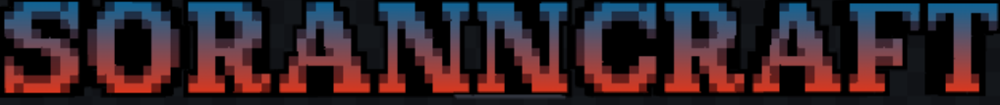
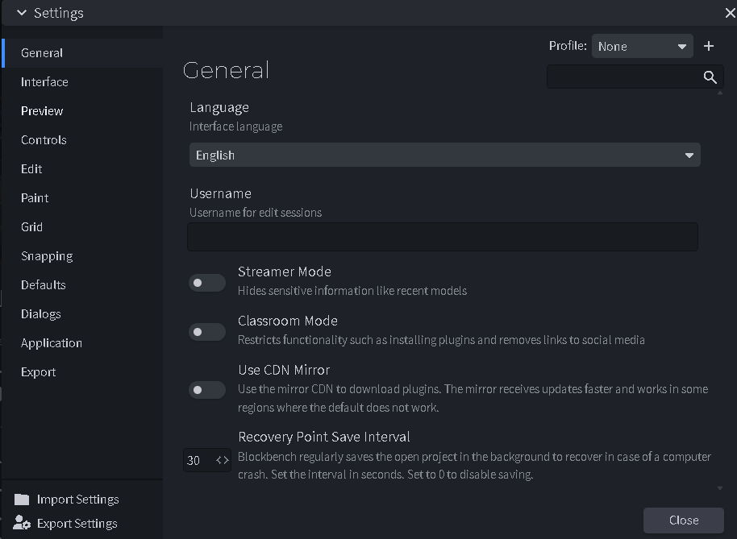
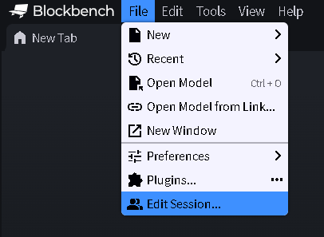

どうも！SORANNCRAFT管理人のSorannです！僕は現在、**小学六年生**ですが、毎日マインクラフトのアドオン開発に熱中しています！
マインクラフトの世界を自分の手で作り変えたいと思ったことはありませんか？
- オリジナルの強力な武器（カスタムアイテム）を作ってみたい！
- 特殊なスキルを持つモブや、便利なGUIを追加したい！
- プログラミングの力で、世界に一つだけのRPGを作りたい！
知れば知るほど面白いのがマイクラのアドオン制作です。**小学六年生の僕でも**、正しいツールを使い、正しい手順を知れば、プロ並みのクオリティでアイテムを作ることができます。このサイトでは、僕が実際に開発して学んだノウハウを、同じ小学生や初心者の方にも分かりやすく解説しています！
「やり方を忘れちゃった」「このコードの書き方は？」という時のために、この攻略Wikiをフル活用してくださいね！
Minecraft Launcherは必ず最新版にしておきましょう。最新のアプデ情報やエンジンの変更をいち早くキャッチして、自分のアドオンに取り入れるのが開発のコツです！
【徹底攻略】カスタムアイテムのテクスチャ作成
カスタムアイテムを「最も簡単」かつ「高品質」に作る方法は、無料ソフト『Blockbench』を使うことです。これは公式でも推奨されている神ツールで、僕も愛用しています。
手順1：Blockbenchの初期設定（日本語化）
まずはツールを使いやすくしましょう。英語のままだと操作が難しいので、最初に日本語設定を行います。

File ＞ Preferences ＞ Settings の順に開き、Languageを「Japanese」に変更します。
設定後に「Restart now」を押して再起動すれば、メニューがすべて日本語になり、操作ミスがグッと減りますよ！
手順2：アイテムウィザードの導入

「プラグイン」メニューから「Minecraft Item Wizard」を検索してインストールします。これを使えば、アドオンに必要な難しいJSONファイルを自動で生成してくれるので、初心者でも安心です！
手順3：アイテムの基本定義
ウィザードを起動したら、「Create an Item!」をクリック。まずはベースとなるアイテムを選びますが、今回は「鉄インゴット」を例に進めていきます。

手順4：IDとステータスの設定
ここが開発の腕の見せ所です！アイテムに魂を吹き込みましょう。

- 表示名： ゲーム内で実際に見える名前。かっこいい名前を付けましょう！日本語も使えます。
- アイテムID： `sorann:super_sword` のように、自分の名前（ネームスペース）を最初に入れるのが、他のアドオンと混ざらないためのプロのコツです。
- スタック数： 1個しか持てないレア武器にするか、64個持てる素材にするか、用途に合わせて選べます。
「食べられるか」「攻撃力は？」などのステータス設定が終わったら、最後はフォルダに書き出しましょう（Export）。
手順5：テクスチャの描き込み

書き出すと、ベースとなる絵が出てきます。ここからは自分好みの色や形をドット絵で描いていきます。自分が描いた絵がマインクラフトのワールドに反映された時の感動は、何度味わっても最高ですよ！
これにて **小学六年生の開発者Sorann** によるカスタムアイテム講座を終わります！(⌒∇⌒)
次はもっと高度な「スクリプトAPI」についても解説していくので、一緒に最強のアドオンを作りましょう！